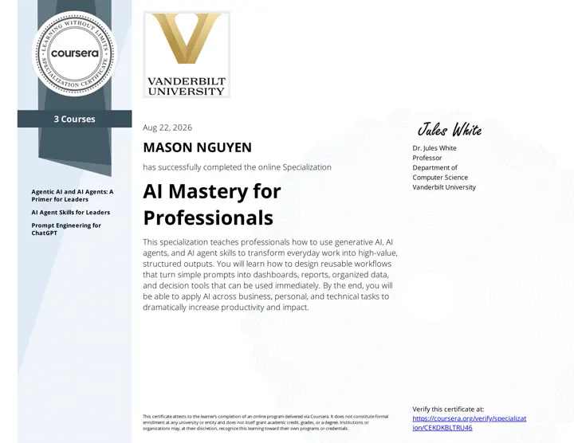
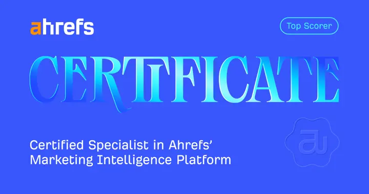

LAYER01
MODEL SYSTEMS
The reasoning core
Language and multimodal models shaped through fine-tuning, prompting, evaluation, and efficient inference.- Large language models
- Fine-tuning
- Inference architecture
- Model evaluation
TECHNICAL KNOWLEDGE · SYSTEMS ARCHITECTURE
AI Mastery studies and engineers the systems that allow intelligent models to acquire knowledge, reason across information, execute autonomous workflows, and operate with greater security, reliability, and scale.
BY MASON NGUYENAI systems architect
01Knowledge systemsGround intelligence in evidence
02Agentic computingTurn reasoning into action
03AI infrastructureMake intelligence production-ready
04Digital trustMake machine decisions verifiable
THE THESIS
The next generation of AI will be defined by the architecture around the model: what it can know, how it can reason, which actions it can take, how computation scales, and whether its outputs can be trusted.
SYSTEMS ARCHITECTURE
Capability emerges when models, knowledge, tools, compute, and controls work as one coherent system.
MODEL SYSTEMS
KNOWLEDGE SYSTEMS
AGENTIC COMPUTE
PRODUCTION INFRASTRUCTURE
THE INTELLIGENCE LOOP
Collect and structure signal from data, documents, tools, and environments.
Select the highest-value context for the decision at hand.
Synthesize knowledge into plans, decisions, and novel conclusions.
Execute bounded workflows through tools, agents, and services.
Measure outcomes, drift, latency, cost, and operational state.
Prove provenance, integrity, authorization, and accountable execution.
KNOWLEDGE INDEX
A connected map of the technologies, methods, and infrastructure shaping intelligent systems.
How to use this map: start with the system decision in front of you, not a fashionable label. Each domain names a question, the methods that make it inspectable, and the domain it should connect to next.
These are learning routes, not claims that a model, vendor, protocol, or course of action is safe, suitable, or complete.
What does the model know, infer, and fail to establish on its own?
Study representation, adaptation, evaluation design, and the distinction between a plausible response and a supported answer.
Which evidence enters the answer, and can a reader trace it back?
Study ingestion, chunking, dense and lexical search, reranking, citation surfaces, and the retrieval failures an evaluation should expose.
What information, instruction, memory, and limit must be present before reasoning begins?
Study context assembly, instruction hierarchy, memory boundaries, compaction, and what should remain deliberately unavailable to a task.
What may the system recommend, call, change, or never touch?
Study planning, tools, state, delegation, and authority boundaries before treating a multi-step workflow as autonomous.
Where should a task route, pause, retry, escalate, or hand off?
Study control planes that coordinate models, tools, policies, queues, and people while retaining a legible decision record.
Can the serving path sustain useful progress across real, multi-turn work?
Study latency, throughput, context growth, caching, scheduling, and the trade-offs between individual progress and system utilization.
Can people and systems recover who made a claim, what it means, and where its evidence lives?
Study entity clarity, canonical records, structured data, source attribution, and freshness as information architecture rather than ranking theatre.
What did the system actually retrieve, decide, call, cost, and return?
Study traces, metrics, evaluation signals, and drift detection that make operational behavior reconstructable without pretending telemetry proves correctness.
Can another party inspect provenance, integrity, authorization, and a correction path?
Study attestations, signed records, content provenance, and the limits of a verification signal when the underlying claim is weak.
Which parts of the system become the bottleneck as data, traffic, models, and dependencies grow?
Study distributed data systems, reliability patterns, capacity planning, and failure isolation across the systems surrounding a model.
What is being forecast, against which history, and what decision changes if the forecast is wrong?
Study signal quality, calibration, decision thresholds, feedback loops, and the difference between a probability estimate and a justified action.
How are model, data, identity, tool, and execution boundaries protected against misuse or compromise?
Study threat models, authorization, policy enforcement, secret handling, and the attack paths introduced when systems retrieve context or execute tools.
LEARNING PATHS
FROM RESEARCH TO PRACTICE
Three focused curricula turn the research domains above into practical judgment for systems that transact, retrieve, make bounded decisions, and earn trust.
Build sound judgment around decision rights, identity, payment policy, settlement, fulfillment, and exception evidence.
Build durable visibility through entity clarity, structured data, retrieval access, attribution, and freshness signals.
Learn to define the resources, decision rights, trace records, observability signals, and accountable escalations that make an autonomous workflow governable.
TRUST INFRASTRUCTURE
As software begins to interpret, decide, and act, the internet needs a way to answer four questions: Where did this come from? Has it changed? Who authorized it? Can another system verify it?
CLAIM STATEVERIFIABLEEvidence attached · Integrity intact
8f4a:7c91:2bd0:e615:verifiedProprietary infrastructure designed around verification, provenance, authenticity, and machine-readable trust.
A programmable verification layer for assessing claims, evidence, provenance, and integrity across machine workflows.
CLAIMS → EVIDENCE → VERDICTA battle-tested protocol direction for attributable, tamper-evident operational signal across distributed systems.
OBSERVE → SIGN → TRANSPORTMachine-readable publishing rails designed to preserve source authenticity and verifiable public records.
PUBLISH → ATTEST → DISTRIBUTETHE MACHINE-READABLE INTERNET
People no longer discover information alone. Search engines, retrieval systems, agents, and generative models increasingly interpret the internet on their behalf.
AI Mastery explores Generative Engine Optimization as infrastructure: clear entities, structured knowledge, attributable claims, retrievable evidence, and content designed to remain legible when a machine becomes the reader.
OPERATING PRINCIPLES
Mastery is not a claim of completion. It is a discipline of deeper models, stronger systems, and evidence that survives contact with reality.
A useful system outlasts a fashionable demo.
Claims should be inspectable, attributable, and reproducible.
Intelligence depends on the interfaces between model, data, tools, and people.
Capability must grow with visibility, governance, and bounded authority.
Security and provenance belong in the protocol, not in the postmortem.
FOUNDER / SYSTEMS ARCHITECT / GEO STRATEGIST
Founder of AI Mastery and Coreweaver Labs. Architect of the ARM Framework. Building at the intersection of AI visibility, agentic infrastructure, and verifiable machine-readable trust.
Mason's practice is deep in GEO, AI visibility, and systems architecture, with connected work across technical search, brand distribution, database and cloud systems, and product infrastructure.
AI Mastery is the research and engineering surface for that work: an evolving map of where intelligent systems are today, and a practical architecture for where they are going.
VERIFIED IDENTITY NETWORK
SELECTED CREDENTIALS
Focused coursework supporting the systems, infrastructure, and visibility work documented across AI Mastery.

VANDERBILT UNIVERSITY · COURSERAAI Mastery for ProfessionalsThree-course specializationView verified credential ↗ NVIDIA · COURSERAAI Infrastructure and Operations FundamentalsCourse certificateView verified credential ↗ NVIDIA · COURSERAIntroduction to NetworkingCourse certificateView verified credential ↗
AHREFS ACADEMYHow to Use AhrefsAcademy certificateView verified credential ↗AI MASTERY / MASON NGUYEN